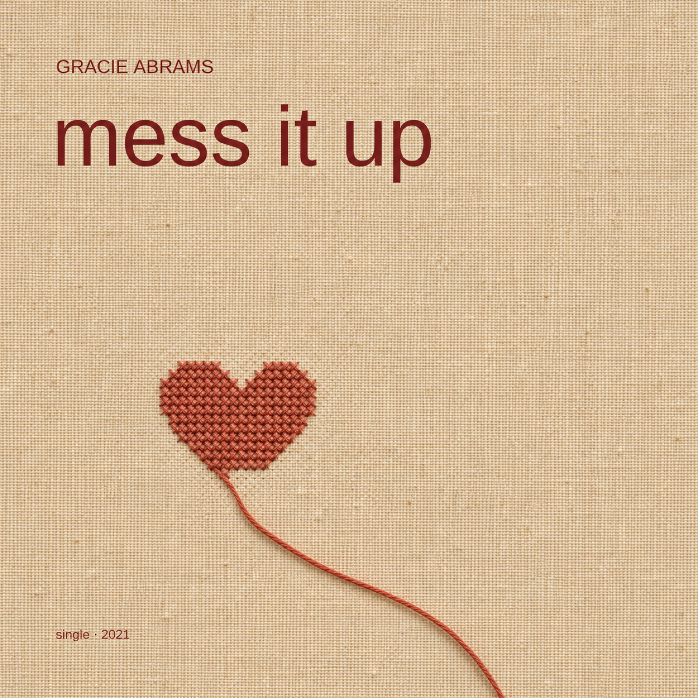

Interdisciplinary designer · Fall 2026
I make systems you can touch.
Hi, I'm Shreya. I work across image, space and interaction—using AI as a material to direct, test and question, never as a substitute for a decision.
Drag anywhere to pull a thread
Selected work · 2026
Five ways of making an idea move.
Open any project for the complete process, revisions and AI-use notes.
 01
01Generative interaction
Signal Garden
Draw a line. The system reads it, grows it and decides how much of your gesture to keep.
Explore the interaction ↗3D model room
Personal Studio
A warm, quiet room translated from an AI reference into measured space, light and material.
Walk through the room ↗
03Album-cover concept
Mess It Up
One stitched heart, one loose thread and a new browser tool that lets visitors make a version with their own photograph.
Make your version ↗ 04
04Hallucination browser game
Prove You Remember
A memory test where the evidence keeps changing and confidence is never the same thing as truth.
Play the final cut ↗ 05
05Final interactive work
Restitch
Pull an image apart with your hand. Every stitch returns carrying a different memory.
Enter Restitch ↗
You made it to the end
THANKYOU
Thanks for looking slowly.